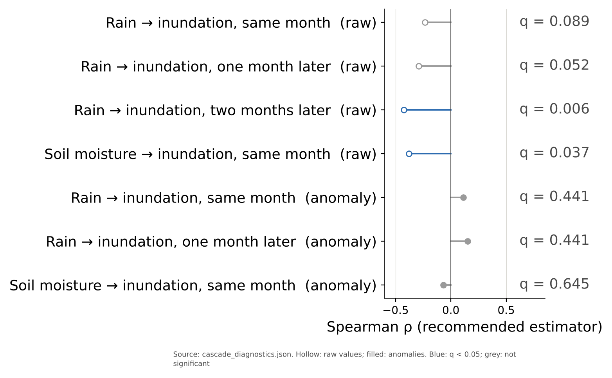
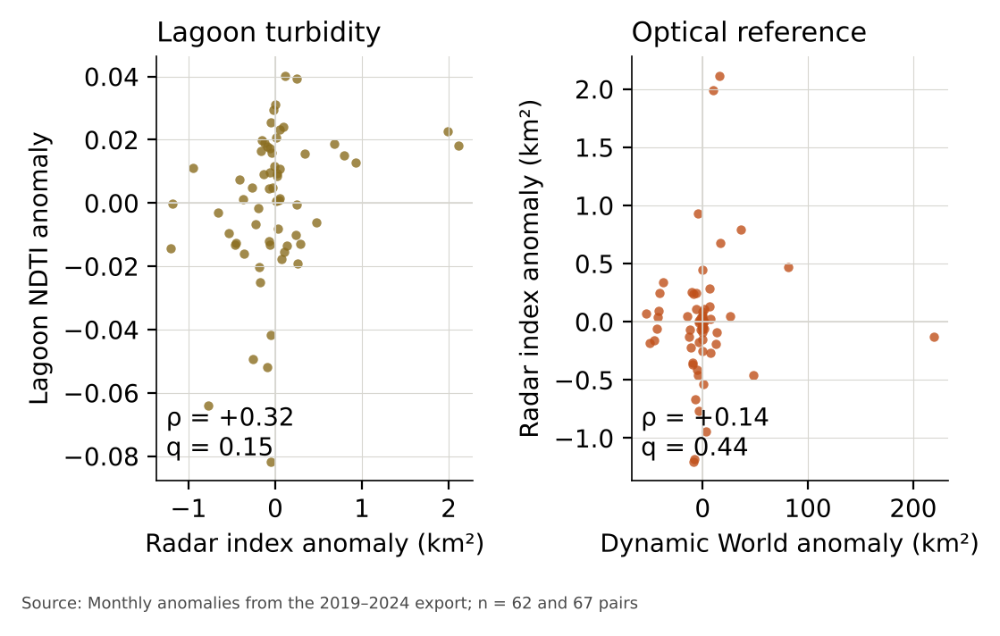

Monthly rainfall, soil moisture and floodplain inundation in the Ogun River catchment, Nigeria, 2019–2024
Satellite records for four upland sub-basins and the Lagos Lagoon estuary
Abstract
The Ogun River drains about 22,165 km² of south-west Nigeria into the Lagos Lagoon, and rainfall and soil wetness are the first controls on how much of its floodplain floods. We assembled a monthly satellite record for January 2019 to December 2024 of rainfall (CHIRPS), shallow soil moisture (ERA5-Land), radar floodplain inundation (Sentinel-1), an optical flooding reference (Dynamic World) and lagoon turbidity (Sentinel-2), averaged over four upland sub-basins and a lagoon zone, and tested whether rainfall and soil moisture are associated with inundation, and inundation with turbidity, at lags of up to two months. Associations were measured with Spearman's rho and autocorrelation-adjusted p-values, and the five headline relationships on month-to-month anomalies were corrected once for multiple testing. On raw monthly values, rainfall and inundation are negatively associated two months apart (ρ = −0.43, q = 0.006), and soil moisture and inundation in the same month (ρ = −0.38, q = 0.037); both reflect the shared wet-season cycle. Once that cycle is removed, none of the 5 relationships is significant (the largest, between inundation and lagoon turbidity, is ρ = +0.32, q = 0.15). The radar index ranks months like the optical reference over the seasonal cycle (ρ = +0.42) but not in anomalies (ρ = +0.14), and its values are far smaller than the optical extent. Over six years, rainfall, soil moisture and radar inundation share a seasonal cycle but show no robust month-to-month coupling. The radar index is uncalibrated and should be treated as a relative measure until it is validated.
Keywords: Ogun River; floodplain inundation; Sentinel-1; CHIRPS; ERA5-Land; lagoon turbidity; time series; Nigeria
Introduction
Floodplains store water and sediment between a river and its estuary. How much of a floodplain goes under water in a given month depends on rainfall, on how wet the soil already is, and on any reservoir upstream. Radar satellites can map inundation through cloud. The Sentinel-1 processing chain developed for automated flood mapping (Twele et al., 2016) is one such approach, and Dynamic World provides an optical land-cover record that includes open water and flooded vegetation (Brown et al., 2022).
Gauge-based studies of the Ogun basin and its rainfall–flood behaviour exist, but in our review limited evidence was found for a single satellite record that combines rainfall, soil moisture, floodplain inundation and lagoon turbidity at monthly resolution. This study asks whether such a record can show how rainfall and soil moisture relate to floodplain inundation, and whether inundation relates to turbidity in the lagoon, over 2019 to 2024.
Study area
The Ogun River drains about 22,165 km² of south-west Nigeria. The catchment is divided into four hydrological sub-basins, Z1 to Z4, derived from HydroBASINS level 9 (Lehner & Grill, 2013). They run from the upland headwaters in the north, through the Oyan tributary and the mainstem, to an alluvial corridor on the lower floodplain. The fifth unit, Z5, is a rectangular lagoon zone at the river's outlet. It is not a watershed, and it is used only for turbidity. Figure 2 shows the order of the units from headwaters to lagoon.
Figure 1 is an interactive map. Choose a variable, then click a unit for its values. Table 2 gives the same values as text.
Loading map…
| Unit | Area (km²) | Mean rain (mm/month) | Wet-season rain (mm/month) | Soil moisture (m³/m³) | Radar index (km²) | Dynamic World (km²) | Turbidity (NDTI) |
|---|---|---|---|---|---|---|---|
| Z1 Upper Ogun Headwaters | 9,574 | 109 | 169 | 0.292 | not interpreted | 27.6 | not interpreted |
| Z2 Oyan–Ofiki Tributary | 9,334 | 106 | 165 | 0.303 | not interpreted | 49.5 | not interpreted |
| Z3 Middle Ogun Mainstem | 2,413 | 111 | 166 | 0.307 | 0.41 | 11.4 | not interpreted |
| Z4 Lower Ogun Alluvial Corridor | 843 | 124 | 183 | 0.314 | 0.15 | 7.2 | not interpreted |
| Z5 Northwest Lagos Lagoon Estuary | 283 | 139 | 205 | 0.178 | not interpreted | not interpreted | -0.037 |
Methods
Satellite data
All series come from Google Earth Engine (export v2.4.0), monthly from January 2019 to December 2024, giving 72 months. Rainfall is the Climate Hazards Group InfraRed Precipitation with Stations product (CHIRPS; Funk et al., 2015) at 0.05°, summed to monthly totals, and a month is kept only where at least five pentads are available. Shallow soil moisture is the volumetric water content of the 0–7 cm layer from ERA5-Land (Muñoz-Sabater et al., 2021) at 0.1°. The radar inundation index uses Sentinel-1 GRD backscatter in VV polarisation, ascending IW passes, with a focal filter of 50 m. The processing is related to the automated approach of Twele et al. (2016) but is not the same chain, and the index is not calibrated against gauge or optical water extent. Dynamic World V1 (Brown et al., 2022) gives an independent optical flooding reference over the same floodplain domain, available in 67 months. Lagoon turbidity is the normalised difference turbidity index (NDTI) from Sentinel-2 surface reflectance over open water (modified NDWI above zero), which is available in 62 months. NDTI is an uncalibrated spectral indicator; it is not in NTU or mg/L. The 10 missing months fall mostly in the cloudy wet season.
The upstream reservoir is represented by the Sentinel-1 open-water area of Oyan Reservoir. This is a proxy for regulation, not a release record: no dam-release data were available.
Spatial aggregation
Each variable is averaged over the pixels of its unit. Radar values are not used for Z1 and Z2, the upland units, following the rule applied in the explorer. Dynamic World and turbidity are available only where those units have valid observations, and the number of valid months is kept with every mean.
Seasonal cycle and anomalies
Two forms of each series are analysed. The raw monthly series show any seasonal co-variation. The anomaly series remove the seasonal cycle by subtracting, from each month, the mean for that calendar month across the six years. An anomaly therefore measures how much wetter, drier, more or less flooded than usual a given month was. With six years, each calendar month has only six values, so the climatology is itself uncertain.
Association and correction for multiple testing
Association is measured with Spearman's rank correlation (rho). Rho is used because the series are not normally distributed, and the diagnostics record that choice. Pearson's r and its confidence interval are reported for transparency, but they do not decide significance, because a single extreme month can dominate Pearson's r. Each p-value is adjusted for autocorrelation with an effective sample size. Pairs are tested at lags of zero, one and two months, so that a response within the same or the next two months can be seen.
The five headline relationships on anomalies form one family, and their p-values are corrected together with the Benjamini–Hochberg false discovery rate (Benjamini & Hochberg, 1995). The corrected value is reported as q. A relationship is called significant only if q is below 0.05.
Robustness
Robustness was tested by leaving out each month in turn, and by removing the single month that most affects the result. The reservoir control was tested by removing the linear effect of reservoir area before testing rainfall against inundation.
What the data can and cannot show
The analysis uses satellite proxies, not measurements. Rainfall is not groundwater recharge, and soil wetness in the top 7 cm is not groundwater availability. The study has no discharge observations, so it makes no claim about river flow. It has no groundwater observations, so it makes no claim about aquifers. Coastal position is not evidence of coastal vulnerability. The results are associations at monthly resolution, not causes.
Results
Seasonal pattern
Averaged by calendar month, rainfall peaks in October, soil moisture in September and the radar inundation index in October. The largest radar value is 3.58 km², in October 2024. The optical Dynamic World series reaches 283 km² in its largest month, so the two are on very different scales (Figure 3).

Associations on raw values and on anomalies
On raw monthly values, rainfall and radar inundation are negatively associated two months apart: rain two months earlier goes with less flooding now (ρ = −0.43, q = 0.006). A one-month lag is borderline (ρ = −0.29, q = 0.052). Soil moisture and flooding in the same month show a negative association too (ρ = −0.38, q = 0.037). These are the co-variations two series would show if both followed the same annual cycle. Once the cycle is removed, none of them is significant (Figure 4). The seasonal relationships are therefore best read as a shared wet-season pattern, not as evidence that rainfall drives flooding.

Month-to-month anomalies
With the seasonal cycle removed, rainfall and flooding in the same month are positively associated (ρ = +0.11, q = 0.44), and one month later (ρ = +0.15, q = 0.44). Neither is significant after correction. The Pearson correlation for the same month is +0.38, with a 95% interval of +0.17 to +0.56, but it depends on one month: leaving out October 2024 gives r = +0.19 (95% interval −0.04 to +0.41). Soil moisture and flooding give ρ = −0.07 (q = 0.65). Of the 5 headline relationships, 0 is significant after correction.
The Oyan Reservoir control leaves the same-month anomaly association almost unchanged (ρ = +0.12, against +0.11 without the control). The reservoir proxy does not explain the absence of a month-to-month link. Because no release records were available, the regulation effect is only partly tested.
Flooding, lagoon turbidity and the optical reference
Lagoon turbidity and radar inundation anomalies are positively associated (ρ = +0.32, q = 0.15), the largest association among the headline relationships, but not significant after correction. The radar index ranks months like Dynamic World over the seasonal cycle (ρ = +0.42), but not in anomalies (ρ = +0.14, q = 0.44). Its values are far smaller than the optical extent, so it should be read as a relative measure, not as an area (Figure 5).

Discussion
Rainfall, soil moisture and radar inundation share a seasonal cycle in this catchment, and that shared cycle is what the raw correlations show. Once it is removed, no headline relationship survives correction. A link between rainfall and flooding is plausible from the seasonal pattern, but six years cannot show that it operates from month to month. Longer records are the first requirement, because they would give more years from which to estimate the seasonal cycle.
The radar index is the weakest part of the chain. It ranks months like the optical reference over the seasonal cycle, but its magnitude is much smaller, and it does not agree in anomalies. Until it is calibrated against gauge or optical water extent, conclusions about flooding should be read as indicative.
Relevance to WAVES. The study is about water processes: how rainfall, soil moisture, floodplain inundation and turbidity change together across a catchment, measured from satellites and tested with stated uncertainty. It does not meet the programme's requirement for independent field observations, because the study has no gauge, discharge or water-use records, and the radar index is not yet validated. A future version would need gauge or reservoir-release data to test the water balance directly.
Relevance to GroundwatCH. The study is not about groundwater. It has no borehole, water-level, pumping or hydrochemical data, and soil moisture in the top 7 cm is not an aquifer measure. The study does not support groundwater conclusions.
Limitations
- Six years give only six values per calendar month, so the anomalies depend on the six-year climatology and on individual years.
- Monthly resolution is coarser than the travel time of water across the upland catchment. Lagged results may reflect storage in soil and floodplain rather than flood routing.
- The radar inundation index is uncalibrated and far smaller than the optical reference. It is not interpreted for the upland units.
- NDTI is an uncalibrated indicator and is missing mostly in the wet season, so turbidity results lean towards the dry season.
- No dam-release records were available; the reservoir control uses only the open-water area of the reservoir.
- CHIRPS (about 5 km) and ERA5-Land (about 9 km) are coarse relative to the floodplain of the sub-basins.
- The autocorrelation adjustment is an approximation based on an effective sample size.
- The study has no discharge, groundwater or coastal-impact observations, and its results are not evidence for them.
Conclusion
Over 2019 to 2024, rainfall, soil moisture and radar floodplain inundation in the Ogun catchment share a seasonal cycle, but they show no robust month-to-month coupling, and the lagoon turbidity link is not significant after correction. The radar index needs calibration before its flood extent can be cited.
Data, code and citation
- ogun_monthly_timeseries.csvCatchment-wide monthly series, 72 months
- ogun_unit_monthly_timeseries.csvPer-unit monthly series
- ogun_subbasins.geojsonAnalytical units
- unit_summary.jsonUnit means shown on the map and in Table 2
- cascade_diagnostics.jsonAll statistics on this page
- RepositoryEarth Engine script, pipeline, tests
How to cite
Oloyede, D. O. (2026). Monthly rainfall, soil moisture and floodplain inundation in the Ogun River catchment, Nigeria, 2019–2024. https://github.com/oloyededavid/Ogun-Catchment-Coast-Observatory
References
- Benjamini, Y., & Hochberg, Y. (1995). Controlling the false discovery rate: a practical and powerful approach to multiple testing. Journal of the Royal Statistical Society: Series B, 57(1), 289–300. doi:10.1111/j.2517-6161.1995.tb02031.x
- Brown, C. F., et al. (2022). Dynamic World, near real-time global 10 m land use land cover mapping. Scientific Data, 9(1). doi:10.1038/s41597-022-01307-4
- Funk, C., Peterson, P., Landsfeld, M., et al. (2015). The climate hazards infrared precipitation with stations: a new environmental record for monitoring extremes. Scientific Data, 2, 150066. doi:10.1038/sdata.2015.66
- Lehner, B., & Grill, G. (2013). Global river hydrography and network routing: baseline data and new approaches to study the world's large river systems. Hydrological Processes, 27(15), 2171–2186. doi:10.1002/hyp.9740
- Muñoz-Sabater, J., Dutra, E., Agustí-Panareda, A., et al. (2021). ERA5-Land: a state-of-the-art global reanalysis dataset for land applications. Earth System Science Data, 13, 4349–4383. doi:10.5194/essd-13-4349-2021
- Twele, A., Cao, W., Plank, S., & Martinis, S. (2016). Sentinel-1-based flood mapping: a fully automated processing chain. International Journal of Remote Sensing, 37(13), 2990–3004.